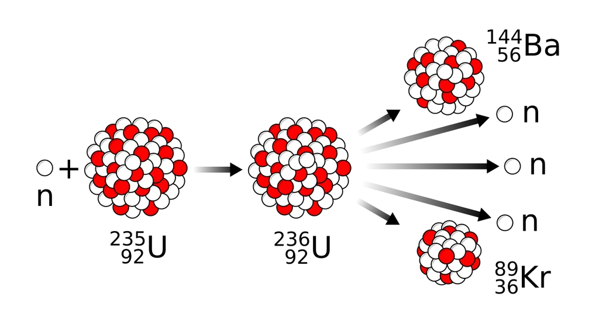
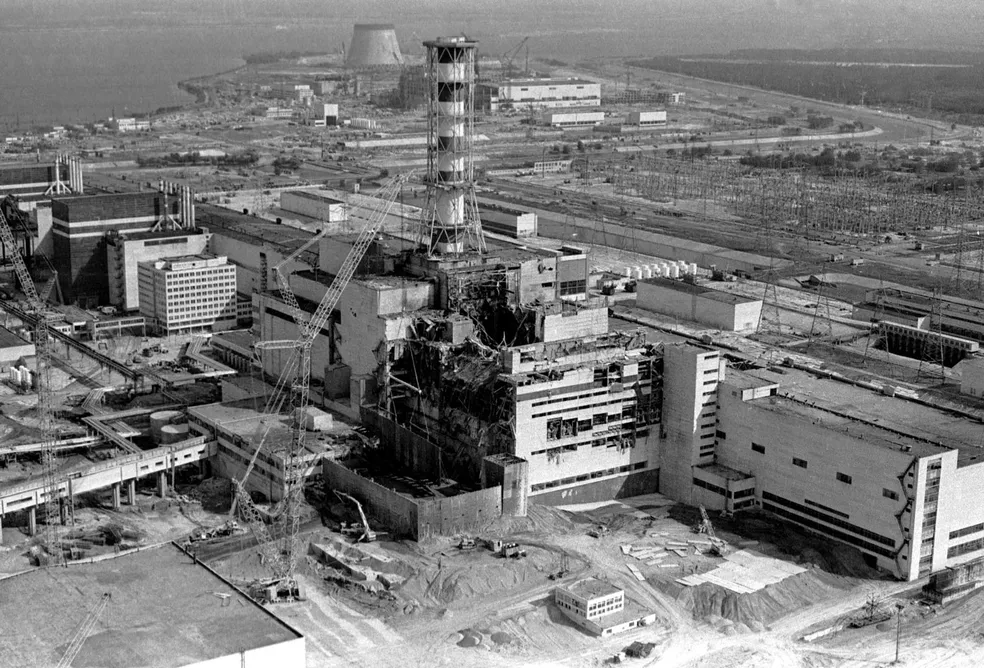
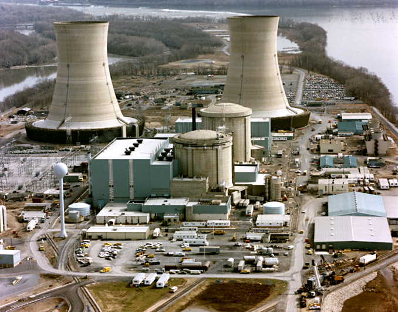
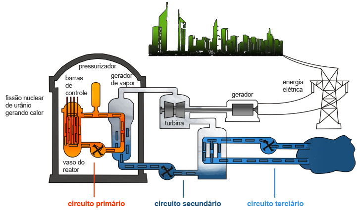
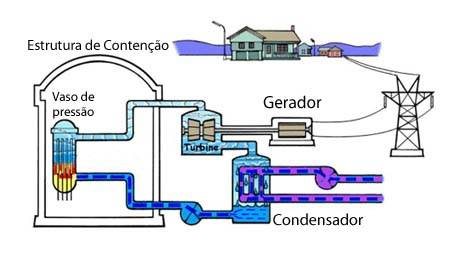
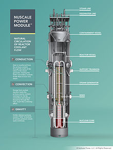

INTRODUÇÃO
Esse site fala sobre a energia nuclear, desde sua descoberta até seu declinio e seu possivel renascimento das cinzas, assim como tambem fala sobre suas principais vantagens ignoradas pela maioria das pessoas, assunto que é de grande importancia considerando que essa energia pode ser a energia do futuro, enfim se quiser saber mais é só começar a ler.
A DESCOBERTA
Em 1938 os pesquisadores Otto Hahn, Lise Meitner e Fritz Strassman descobriram que ao emitir nêutrons em átomos de uranio, esses átomos se tornariam instáveis e se partiriam em dois pedaços instantaneamente e geravam novos átomos mais leves (como o bário e o criptônio), assim provocando uma fissão nuclear e produzindo energia cinética com a movimentação dos fragmentos dos átomos, mas uma outra descoberta interessante foi a de que a fissão nuclear gerava mais nêutrons do que tinham inicialmente e esses nêutrons a mais se chocavam com outros átomos de uranio, assim provocando uma reação nuclear em cadeia, ou seja, a fissão nuclear a partir desse momento se tornava uma alternativa viável para a produção de energia, sendo necessário apenas descobrir como criar uma versão controlada dessa reação em cadeia, mas o inicio da segunda guerra mundial no ano seguinte, mudou a direção dessas pesquisas para que elas focassem na construção de armas nucleares, mas apesar disso em 1942 o primeiro reator nuclear do mundo foi construído na Universidade de Chicago para propósitos de pesquisa por uma equipe liderada pelo físico Enrico Fermi e em 1953 o presidente estadunidense Dwight Eisenhower fez o discurso “atoms for peace”, um discurso que não só disseminou a tecnologia de reatores nucleares do estados unidos para o mundo inteiro como foi dito tambem que essa seria uma maneira de transformar um maleficio em um beneficio para a humanidade e no ano seguinte a primeira usina nuclear de uso civil foi construída na cidade de Obninsk, na antiga união soviética, e durante um tempo houve uma grande empolgação para investir em energia nuclear no mundo todo, tanto que após o discurso de Eisenhower se dizia que tinha se iniciado a partir dali uma nova era nuclear.

representação do processo de fissão nuclear
 Eisenhower no discurso "atomos pela paz" em 8 de dezembro de 1953
Eisenhower no discurso "atomos pela paz" em 8 de dezembro de 1953
OS ACIDENTES
Mas algo que restringiu a expansão do uso de energia nuclear no mundo e restringe até hoje são os acidentes nucleares que ocorreram em Three Mile Island nos estados unidos em 1979, onde 140.000 pessoas foram evacuadas de suas casas em um raio de 30 km ao redor da usina mas que não ocasionou nenhuma morte ou nenhum tipo de cancer devido ao efeito colateral da radiação, e em Chernobil na Ucrânia ( que na época era parte da união soviética) em 1986, que é considerado o maior acidente nuclear da historia, matando milhares e deixando uma cidade inteira inabitada, e após esses acidentes criou-se um medo enorme da energia nuclear em grande parte do mundo, tanto que depois do acidente de Three Mile island o governo dos estados unidos cancelou a construção de novos reatores e apenas terminaram as construções já em andamento, tanto que a maioria das usinas nucleares dos estados unidos, que é o maior produtor mundial de energia nuclear, foram construídas entre as décadas de 60 e 70, e a maioria das usinas que foram construídas depois dessa época eram parte dos projetos em andamento mencionados anteriormente, o que leva a outro fator que limita o potencial de produção de energia nuclear, esse sendo a tecnologia ultrapassada dos reatores nucleares, já que não só nos estados unidos mas no mundo inteiro a grande maioria das usinas nucleares ativas utilizam reatores de 2ª geração (que são a primeira geração de reatores com proposito comercial) que foram construídos nesse mesmo período, o que os torna menos produtivos e seguros.

usina nuclear de chernobil após seu acidente nuclear em 26 de abril de 1986

usina nuclear de three mile island onde ocorreu o acidente nuclear em 28 de março de 1979
AS VANTAGENS IGNORADAS
Algumas das vantagens da energia nuclear que são ignoradas devido a demonização que existe ao redor desse tipo de energia é o fato dela potencialmente ser a mais limpa que existe atualmente, pois as usinas nucleares produzem energia através da fissão nuclear que é usada para aquecer a água dentro do reator que é transformada em vapor pressurizado, vapor esse que gira uma turbina e assim cria energia de forma que não gere gás carbônico, o que torna a pegada de carbono da energia nuclear equivalente a da energia eólica e menor que a da energia solar e algo que contribui também para a redução da pegada de carbono é a densidade da produção de energia nuclear, já que as usinas nucleares conseguem produzir 1.000 watts de energia por m² (metro quadrado) de espaço ocupado pela usina diferente de outras fontes de energia limpa como, por exemplo, os parques eólicos e solares que produzem, 25 e 20 watts por m² respectivamente e a construção de usinas nucleares não exigem o desmatamento da área onde vai ser construída como os parques eólicos ou o alagamento de uma área extensa de terra como as usinas hidrelétricas, e também as usinas nucleares podem produzir energia constantemente, diferente de, por exemplo, painéis solares que não podem produzir energia a noite, parques eólicos que não produzem energia sem vento e usinas hidrelétricas cuja produção de energia é muito irregular já que ela é dependente da disponibilidade de água, o que se torna um grande problema em períodos de seca, e algo que é bem vantajoso na energia nuclear é a vida útil do elemento combustível e da própria usina nuclear em si, já que o elemento combustível dentro de um reator pode ser utilizado por 3 anos e diversas usinas nucleares estão em operação a mais de 50 anos e pesquisas indicam que elas podem continuar em operação por até 100 anos enquanto um painel solar dura 50 anos, mas perdendo eficiência na produção de energia depois de uns 25 ou 30 anos de vida e uma turbina eólica tem uma vida útil de 30 anos, mas infelizmente devido a esse tipo de energia ter caido em desuso em grande parte do mundo, o mundo não podera aproveitar de seus beneficios.

diagrama de geração de uma usina nuclear de água pressurizada (PWR)

diagrama de geração de uma usina nuclear de água fervente (BWR)
A LUZ NO FIM DO TUNEL
Mas o aumento do consumo de energia devido aos servidores de IA fez com que a energia nuclear voltasse a ser discutida como uma maneira de suprir as futuras demandas desse tipo de energia, principalmente por empresas de tecnologia que utilizam IA, já que um data center normal precisa de 32 megawatts de energia, enquanto um data center de IA precisa de 80, algumas das empresas que já estão se planejando para isso nesse ano, como a Microsoft que fez um acordo com a Constellation Energy para comprar a unidade (reator) 1 da usina de three Mile island, que havia sido desativada em 2019 devido a motivos operacionais, por 20 anos após sua reabertura, a amazon também está investindo em energia nuclear, assinando diversos acordos para construir pequenos reatores modulares (SMR’s) que são versões mais compactas e potencialmente mais fáceis de construir do que reatores tradicionais, assim como a google que fez um acordo com a kairos Power também com esse intuito.

imagem de um diagrama de um SMR (pequeno reator modular)
CONCLUSÃO
E a energia nuclear continua sendo discutida como uma potencial energia do futuro a mais de 80 anos e ainda assim esse futuro não parece chegar nunca, mas talvez agora possamos aproveitar o potencial que essa energia tem a oferecer ao mundo, mas até que isso aconteça esse site continuara aqui e caso você queira ver um conteudo adicional e tambem fazer posts dentro do site dando ideias de como ajudar a melhorar o site é só se cadastrar para poder ver tudo isso.